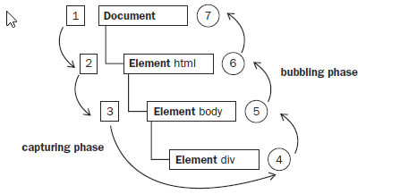

Primitive and Reference Values
- Primitive values (ndefined, Null, Boolean, Number, and String) are simple pieces of data that are stored in memory on the stack , which is to say that the value is completely stored in one memory location.
- Reference values , on the other hand, are objects that are stored on the heap , meaning that the value stored in the variable is actually just a pointer to another memory location where the object is stored.

Dynamic Properties
When working with reference values, properties and methods may be added, changed, or deleted at any time.
var person = new Object();
person.name = "Nicholas";
alert(person.name); //"Nicholas"
Primitive values can’t have properties added to them even though attempting to do so won’t cause an error.
var name = "Nicholas";
name.age = 27;
alert(name.age); //undefined
Copying Values
When a primitive value is assigned from one variable to another, the value stored on the stack is created and copied into the location for the new variable.
var num1 = 5;
var num2 = num1;

When a reference value is assigned from one variable to another, the value stored on the stack is also copied into the location for the new variable. The difference is that this value is actually a pointer to an object stored on the heap. Once the operation is complete, two variables point to exactly the same object, so changes to one are reflected on the other
var obj1 = new Object();
var obj2 = obj1;
obj1.name = "Nicholas";
alert(obj2.name); //"Nicholas"

Argument Passing
All function arguments in ECMAScript are passed by value. This means that the value outside of the function is copied into an argument on the inside of the function the same way a value is copied from one variable to another.
- If the value is primitive, then it acts just like a primitive variable copy
- if the value is a reference, it acts just like a reference variable copy
Primitive
function addTen(num) {
num += 10;
return num;
}
var count = 20;
var result = addTen(count);
alert(count); //20 - no change
alert(result); //30
Reference
function setName(obj) {
obj.name = "Nicholas";
}
var person = new Object();
setName(person);
alert(person.name); //"Nicholas"
function setName(obj) {
obj.name = "Nicholas";
obj = new Object();
obj.name = "Greg";
}
var person = new Object();
setName(person);
alert(person.name); //"Nicholas"
Determining Type
The typeof operator, introduced in the previous chapter, is the best way to determine if a variable is a primitive type.
var s = "Nicholas";
var b = true;
var i = 22;
var u;
var n = null;
var o = new Object();
alert(typeof s); //string
alert(typeof i); //number
alert(typeof b); //boolean
alert(typeof u); //undefined
alert(typeof n); //object
alert(typeof o); //object
The instanceof operator returns true if the variable is an instance of the given reference type (identified by its constructor function).
alert(person instanceof Object); //is the variable person an Object?
alert(colors instanceof Array); //is the variable colors an Array?
alert(pattern instanceof RegExp); //is the variable pattern a RegExp?
Execution Context
The execution context of a variable or function defines what other data it has access to, as well as how it should behave. Execution context is the envionment / scope the current code is being evaluated in

Scope
When code is executed in a context, a scope chain of variable objects is created. The purpose of the scope chain is to provide ordered access to all variables and functions that an execution context has access to.
var color = "blue";
function changeColor(){
var anotherColor = "red";
function swapColors(){
var tempColor = anotherColor;
anotherColor = color;
color = tempColor;
//color, anotherColor, and tempColor are all accessible here
}
//color and anotherColor are accessible here, but not tempColor
swapColors();
}
//only color is accessible here
changeColor();

Scope Chain Augmentation
Even though there are only two types of execution contexts, global and local (function), there are other ways to augment the scope chain.
- The catch block in a try - catch statement
- A with statement
function buildUrl() {
var qs = "?debug=true";
with(location){
var url = href + qs;
}
return url;
}
No Block-Level Scopes
JavaScript ’ s lack of block - level scopes is a common source of confusion.
for (var i=0; i < 10; i++){
doSomething(i);
}
alert(i); //10
Variable Declaration
- When a variable is declared using var, it is automatically added to the most immediate context available.
- If a variable is initialized without first being declared, it gets added to the global context automatically
function add(num1, num2) {
sum = num1 + num2;
return sum;
}
var result = add(10, 20); //30
alert(sum); //30
Initializing variables without declaring them is a very common mistake in JavaScript programming and can lead to errors. It’s advisable to always declare variables before initializing them to avoid such issues.
Identifier Lookup
var color = "blue";
function getColor(){
return color;
}
alert(getColor()); //"blue"

Variable lookup doesn ’ t come without a price. It ’ s faster to access local variables than global variables because there ’ s no search up the scope chain.
Event Flow
Event flow describes the order in which events are received on the page, the IE and Netscape development teams came up with an almost exactly opposite concept of event flow.
- IE would support an event bubbling flow
- Netscape Communicator would support an event capturing flow
Event Bubbling
The IE event flow is called event bubbling , because an event is said to start at the most specific element (the deepest possible point in the document tree) and then flow upward towards the least specific node (the document).
< html >
< head >
< title > Event Bubbling Example < /title >
< /head >
< body >
< div id="myDiv" > Click Me < /div >
< /body >
< /html >
Event Capturing
The Netscape Communicator team came up with an alternate event flow called event capturing . The theory of event capturing is that the least specific node should receive the event first and the most specific node should receive the event last.

DOM Event Flow
The event flow specified by DOM Level 2 Events has three phases: the event capturing phase, at the target, and the event bubbling phase.

Cross-Browser Event Handler
var EventUtil = {
addHandler: function(element, type, handler){
if (element.addEventListener){
element.addEventListener(type, handler, false);
} else if (element.attachEvent){
element.attachEvent("on" + type, handler);
} else {
element["on" + type] = handler;
}
},
removeHandler: function(element, type, handler){
if (element.removeEventListener){
element.removeEventListener(type, handler, false);
} else if (element.detachEvent){
element.detachEvent("on" + type, handler);
} else {
element["on" + type] = null;
}
}
};
var btn = document.getElementById("myBtn");
var handler = function(){
alert("Clicked");
};
EventUtil.addHandler(btn, "click", handler);
//other code here
EventUtil.removeHandler(btn, "click", handler);

Prototypes
- Objects in JavaScript are based on prototypes. A prototype is an object that serves as the base of another object, defining and implementing members that a new object must have.
- Prototype objects are shared amongst all instances of a given object type, and so all instances also share the prototype object’s members.
- Consequently, objects can have two types of members: instance members (also called "own" members) and prototype members. Instance members exist directly on the object instance itself, whereas prototype members are inherited from the object prototype.
Example
var book = {
title: "High Performance JavaScript",
publisher: "Yahoo! Press"
};
alert(book.toString()); //"[object Object]"

Prototype Chains
The prototype of an object determines the type or types of which it is an instance. By default, all objects are instances of Object and inherit all of the basic methods, such as toString().
Example
function Book(title, publisher){
this.title = title;
this.publisher = publisher; }
Book.prototype.sayTitle = function(){
alert(this.title);
};
var book1 = new Book("High Performance JavaScript", "Yahoo! Press");
var book2 = new Book("JavaScript: The Good Parts", "Yahoo! Press");
alert(book1 instanceof Book); //true alert(book1 instanceof Object); //true
book1.sayTitle(); //"High Performance JavaScript"
alert(book1.toString()); //"[object Object]"

Avoid using eval or the Function constructor
- Using eval or Function constructor are expensive operations as each time they are called script engine must convert source code to executable code.
- Additionally, using eval the context of the string has to be interpreted at runtime.
Slow:
function addMethod(object, property, code) {
object[property] = new Function(code);
}
addMethod(myObj, 'methodName', 'this.localVar=foo');
Faster:
function addMethod(object, property, func) {
object[property] = func;
}
addMethod(myObj, 'methodName', function () { 'this.localVar=foo'; });
Js Perf Demo
Avoid using with
Although seen as a convenience, with construct introduces an extra scope to search each time variable is referenced and the contents of that scope is not known at compile time.
Slow:
with (test.object) {
foo = 'Value of foo property of object';
bar = 'Value of bar property of object';
}
Faster:
var myObj = test.object;
myObj.foo = 'Value of foo property of object';
myObj.bar = 'Value of bar property of object';
JsPerf Demo
Don't use try-catch-finally inside performance-critical functions
- The try-catch-finally construct creates a new variable in the current scope at runtime each time the catch clause is executed where the caught exception object is assigned to a variable.
- Exception handling should be done at as high level in the script where it does not occur frequently, for example outside a loop.
- Or if possible, avoid try-catch-finally completely
Slow:
var object = ['foo', 'bar'], i;
for (i = 0; i < object.length; i++) {
try {
// do something that throws an exception
} catch (e) {
// handle exception
}
}
Faster:
var object = ['foo', 'bar'], i;
try {
for (i = 0; i < object.length; i++) {
// do something
}
} catch (e) {
// handle exception
}
Js Perf Demo
Avoid using global variables
- If you reference global variables from within function or another scope, scripting engine has to look through the scope to find them.
- Variable in the global scope persist though the life time of the script, whereas in local scope they are destroyed when the local scope is lost.
Slow:
var i, str = '';
function globalScope() {
for (i=0; i < 100; i++) {
str += i; // here we reference i and str in global scope which is slow
}
}
globalScope();
Faster:
function localScope() {
var i, str = '';
for (i=0; i < 100; i++) {
str += i; // i and str in local scope which is faster
}
}
localScope();
Js Perf Demo
Avoid for-in in performance-critical functions
- The for-in loop requires the script engine to build a list of all the enumerable properties and check for duplicates prior the start.
- If your code inside for loop does not modify the array it iterates pre-compute the length of the array into a variable len inside for loop scope.
Slow:
var sum = 0;
for (var i in arr) {
sum += arr[i];
}
Faster:
var sum = 0;
for (var i = 0, len = arr.length; i < len; i++) {
sum += arr[i];
}
Js Perf Demo
Primitive operations can be faster than function calls
- Consider using alternative primitive operation over function calls in performance critical loops and functions.
Slow:
var min = Math.min(a, b);
arr.push(val);
Faster:
var min = a < b ? a : b;
arr[arr.length] = val;
Js Perf Demo
Avoid unnecessary DOM references in objects
var car = new Object();
car.color = "red";
car.type = "sedan"
var car = {
color : "red";
type : "sedan"
}
Js Perf Demo
Store local references to out-of-scope variables
- When a function is executed an execution context is created and an activation object containing all local variables is pushed to the front of the context's scope chain.
- Further in the chain, the slower the identifier resolution is, which means local variables are fastest.
- By storing local references to frequently used out-of-scope variables reading and writing to variables is significantly faster. This is visible especially with global variables and other deep searches for identifier resolution.
- Also in-scope variables (var myVar) are faster than object property access (this.myVar).
Slow:
var btn1 = document.getElementById("btn1");
var btn3 = document.getElementById("btn3");
var btn5 = document.getElementById("btn5");
var btn7 = document.getElementById("btn7");
var btn9 = document.getElementById("btn9");
Faster:
var doc = document;
var btn1 = doc.getElementById("btn1");
var btn3 = doc.getElementById("btn3");
var btn5 = doc.getElementById("btn5");
var btn7 = doc.getElementById("btn7");
var btn9 = doc.getElementById("btn9");
Js Perf Demo
If you need to access an element (e.g. the head) inside a big loop using a localized DOM access ( get in the example) is faster.
function doSomethingElseFaster() {
var get = document.getElementsByTagName;
for (var i = 0, i < 100000; i++) {
get('head');
}
}
Js Perf Demo
Caching values to variables
- Caching values to local variables where ever needed prevents interpreter from doing the repetative job.
- Couple of examples below should clarify the caching/storing values to variable in broader sense.
Caching math functions in variables before executing calculations within a loop
Wrong Way:
var d=35;
for (var i=0; i<1000; i++) {
y += Math.sin(d)*10;
}
Better Approach:
var d = 55;
var math_sind = Math.sin(d)*10;
for (var i=0; i<1000; i++) {
y += math_sind;
}
Js Perf Demo
Document Object Model (DOM)
Minimize the size of the DOM
Slow DOM performance can be traced back into the following three main causes:
- The size of DOM slows down all the operation related to it such as reflowing, traversal and DOM manipulation.
- The most effective way to make programs faster is to make n smaller means that the DOM should be as small as possible at all times.
- Minimize n, you can track the number of elements in a page by:
document.getElementsByTagName('*').length
Use document fragment templates for re-usability
- Dynamically inserting and updating elements into the DOM is expensive. An efficient way to tackle this is to use HTML templates which can be cloned and re-used for re-usable parts of the DOM such as dialogs and other UI widgets.
- In practice the approach is to modify, clone and append all nodes in JavaScript without touching the live DOM and append the completed document fragment to the DOM at once. One can do this with DOM API or alternatively construct a string representation of the HTML fragment to append based on a string template and push that into the DOM with a one innerHTML assignment. On both cases the rendering engine does not have to reflow and repaint the layout multiple times. Next we introduce some techniques to achieve this behavior.
Minimize the number of reflows and repaints
- Operation that trigger reflows should be used sparsely.
- Reflowing a table element is more expensive that reflowing equivalent element with block display.
- Elements that are positioned absolutely or fixed do not affect the main document layout, so their reflowing is cheaper as they do not trigger main document reflowing. This is recommended approach for element that need to be animated.
- DOM modifications trigger reflow. This means that operations such as adding new elements, changing the value of text nodes or adding element attributes and their properties cause reflow.
- Good strategies to overcome this limitation are elaborated next.
Use createDocumentFragment()
- Make multiple changes in a DOMDocumentFragment and add the fragment into the DOM in a single operation. This triggers only one reflow.
Slow:
var list = ['foo', 'bar', 'baz'],
elem,
contents;
for (var i = 0; i < list.length; i++) {
elem = document.createElement('div');
content = document.createTextNode(list[i]);
elem.appendChild(content);
document.body.appendChild(elem);
}
Faster:
var fragment = document.createDocumentFragment(),
list = ['foo', 'bar', 'baz'],
elem,
contents;
for (var i = 0; i < list.length; i++) {
elem = document.createElement('div');
content = document.createTextNode(list[i]);
fragment.appendChild(content);
}
document.body.appendChild(fragment);
Js Perf Demo
Use cloneNode()
- If you're not working on elements that do not contain form elements or event handlers, you can clone the element to modify and swap it in place after all the changes have been done resulting in a one reflow only.
- A faster alternative to above slow approach is presented below.
Faster:
var orig = document.getElementById('container'),
clone = orig.cloneNode(true),
list = ['foo', 'bar', 'baz'],
elem,
contents;
clone.setAttribute('width', '50%');
for (var i = 0; i < list.length; i++) {
elem = document.createElement('div');
content = document.createTextNode(list[i]);
elem.appendChild(content);
clone.appendChild(elem);
}
original.parentNode.replaceChild(clone, original);
Modify an invisible element
- If the display property of an element is set to none it will not be repainted.
- By setting display to none, do the modifications and then set it to block causes only two reflows
Slow:
var subElem = document.createElement('div'),
elem = document.getElementById('animated');
elem.appendChild(subElem);
elem.style.width = '320px';
Faster:
var subElem = document.createElement('div'),
elem = document.getElementById('animated');
elem.style.display = 'none';
elem.appendChild(subElem);
elem.style.width = '320px';
elem.style.display = 'block';
Minimize the use of operations determining the dimensions or location of elements
- Determining dimensions or location of elements via getComputedStyle, offsetWidth, scrollWidth and clientWidth properties will force reflow.
- If you take the measurements repeatedly, consider taking them only once.
- This issue is the main cause of slowness in WebKit according to Dave Hyatt
Slow:
var elem = document.getElementById('animated');
elem.style.fontSize = (elem.offsetWidth / 10) + 'px';
elem.firstChild.style.marginleft = (elem.offsetWidth / 20) + 'px';
Faster:
var elem = document.getElementById('animated'),
elemWidth = elem.offsetWidth;
elem.style.fontSize = (elemWidth / 10) + 'px';
elem.firstChild.style.marginleft = (elemWidth / 20) + 'px';
Make multiple predefined style changes at once using className
- As with DOM manipulation, several style changes can be done at the same time.
- Instead if you set the styles one by one, multiple reflows and repaints can be triggered.
Slow:
var elem = document.getElementById('styled');
elem.style.background = 'blue';
elem.style.color = 'white';
Faster:
<code html4strict>
<style type="text/css">
div { background: white; color: black; }
div.active { background: blue; color: white; }
</style>
...
var elem = document.getElementById('styled').className = 'active';
Make multiple dynamic style changes at once using setAttribute
- For dynamic animation, using predefined styles does not work. In this case setAttribute object can be used (for IE, use style.cssText property)
Faster:
var elem = document.getElementById('styled');
elemStyle = 'background: blue; color: white;';
elem.setAttribute('style', elemStyle);
Avoid traversing large number of nodes
- Always try to use inbuilt methods and collections of the DOM to narrow down the search to smallest number of nodes possible.
- Try to avoid manually recursively stepping through the DOM as much as possible.
Slow:
var elements = document.getElementsByTagName('*'); // searches every element, slow
for (i = 0; i < elements.length; i++) {
if (element[i].hasAttribute('selected')) { // continues even through element was found
...
}
}
Faster:
var elements = document.getElementById('parent').childNodes; // we know the element is a child of parent
for (i = 0; i < elements.length; i++) {
if (element[i].nodeType == 1 && element[i].hasAttribute('selected') { // first test for valid node type
...
break; // break out of the loop if we found what we were looking for
}
}
Avoid modifications while traversing
- childNodes and NodeList returned by getElementsByTagName() are live. This means that these collections may change without waiting for the execution to finish first.
- If new elements are added to the collections while they are traversed, an infinite loop may occur.
- If new elements are added even outside of collection itself, the collection must look for potential new entries. Due to this it cannot remember its last position or length which need to be recalculated.
Slow:
var elems = document.getElementsByTagName('div');
for (var i = 0; i < elems.length; i++) {
elems[i].appendChild(document.createTextNode(i));
}
Faster:
var elems = document.getElementsByTagName('div'),
temp = [];
for (var i = 0; i < elems.length; i++) {
temp[i] = elems[i]; // first a build static list of elements to modify
}
for (var i = 0; i < temp.length; i++) {
temp[i].appendChild(document.createTextNode(i)); // perform modifications on static list instead of live NodeList
}
temp = null;
Use event delegation
- Assigning event handlers to individual objects can add up quickly and is expensive if you create a lots of new elements dynamically to which event handlers need to be bound.
- This becomes especially interesting if you assign multiple event listeners (e.g. click and blur to a one element. In case of 100 elements that would mean 200 event handlers.
- Using DOM Level 2 event model all events propagate toward the document object which is highest up in the hierarchy. This means that one can bind event listeners to document which invokes a controller and passes the event object to it. The controller is responsible for inspecting the internals of the event and dispatching to appropriate logic.
Slow:
var elems = [first, ..., last]; // an array which holds say 1000 references to element to which assign the event handlers to
for (var i, l = elems.length; i++; i < l) {
elems[i].onclick = function() {};
elems[i].onblur = function() {};
}
Faster:
//HTML
<button id="doSomething">Click me to do something</button> // you can add more of elements without the need to worry about binding event handlers
// JS
document.addEventListener('click', function(event) { eventController(event); }, false);
document.addEventListener('blue', function(event) { eventController(event); }, false);
function eventController(event) {
// inspect the event object internals and do something wise
if (event.target.id === 'doSomething') {
doSomething();
}
}
function doSomething() {}
Js Perf Demo
Throttle event handlers which fire excessively
- If a handler is called many times, the responsiveness of the UI degrade and tops the CPU. This is especially an issue if the event handler triggers reflow as is the case with resize.
- You may want your function to run once after the last event has fired to prevent excessive calls to potentially expensive functions. You must implement throttling mechanism to achieve that kind of a rate limited.
Slow:
window.onresize = resizeHandler; // fires excessively during resize
Faster:
function SomeObject() {
var self = this;
this.lastExecThrottle = 500; // limit to one call every "n" msec
this.lastExec = new Date();
this.timer = null;
this.resizeHandler = function() {
var d = new Date();
if (d-self.lastExec < self.lastExecThrottle) {
// This function has been called "too soon," before the allowed "rate" of twice per second
// Set (or reset) timer so the throttled handler execution happens "n" msec from now instead
if (self.timer) {
window.clearTimeout(self.timer);
}
self.timer = window.setTimeout(self.resizeHandler, self.lastExecThrottle);
return false; // exit
}
self.lastExec = d; // update "last exec" time
// At this point, actual handler code can be called (update positions, resize elements etc.)
// self.callResizeHandlerFunctions();
}
}
var someObject = new SomeObject();
window.onresize = someObject.resizeHandler;
Source:
Escaping the JavaScript call stack with setTimeout
- Setting up handlers that run after an event has fired needs some trickery. Because the event doesn’t take effect until the event-handling call stack opens and closes completely, there’s no way to work in a post-event environment via conventional event handlers.
- When something is called using setTimeout with a delay of 0 the JavaScript engine notices it is busy (with a task which invoked setTimeout) and queues the setTimeout code for execution immediately after the current call stack closes.
- This technique can be used to prioritize certain functionality such as showing and hiding loading indicator prior to executing a computationally heavy operation such as modifying the DOM.
In a typical scenario this will not turn the loading indicator visible:
showLoadingIndicator();
doSomethingExpensive();
Workaround is to use setTimeout as follows (please take extra care when using this anti-pattern as what it does is actually delays the execution in order to display the loading indicator in the UI):
function switchViews() {
setTimeout(function() {
showLoadingIndicator();
}, 0);
setTimeout(function() {
doSomethingExpensive();
}, 50);
}
Source: